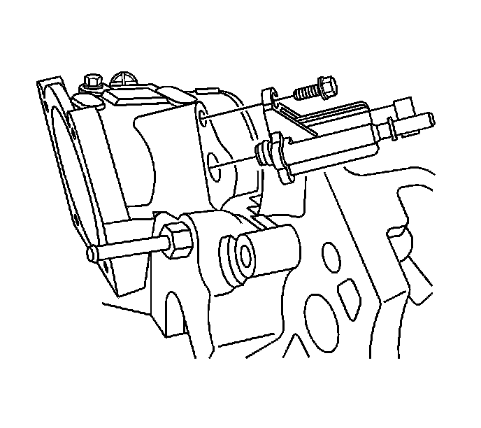

Canister Purge Solenoid: Service and Repair
Evaporative Emission Canister Purge Solenoid Valve Replacement
Removal Procedure

1. Loosen the fuel cap in order to relieve the system pressure.
2. Remove the fuel injector sight shield. Refer to Fuel Injector Sight Shield Replacement (Service and Repair) .
3. Disconnect the evaporative emission (EVAP) canister purge valve electrical connector (1).
4. Disconnect the EVAP purge pipe (2) from the EVAP canister purge valve.

5. Remove the EVAP canister purge valve retaining bolt.
6. Remove the EVAP canister purge valve from the water housing.
Installation Procedure
Important: Be sure to install a new O-ring on the EVAP purge valve.
1. Lubricate the O-ring with clean engine oil.
2. Install the EVAP canister purge valve to the water housing.
Notice: Refer to Fastener Notice .
3. Install the EVAP canister purge valve retaining bolt.
Tighten the bolt to 12 N.m (106 lb in).
4. Connect the EVAP purge pipe (2) to the EVAP canister purge valve.
5. Connect the EVAP canister purge valve electrical connector (1).
6. Install the fuel injector sight shield. Refer to Fuel Injector Sight Shield Replacement (Service and Repair) .